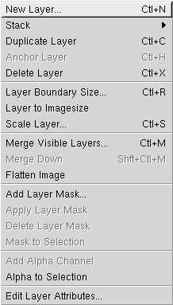

Layer-related functions in GIMP are performed in the Layers Dialog which can be accessed from File > Dialogs > Layers, Channels & Paths... or by pressing Ctrl+L
At the top of the dialog is a combo-box which defines what image the layers dialog is displaying. If Auto is selected, the currently focused image will be the default. Alternativly, you can change the image by clicking on the box and selecting a different image from the menu. A small preview of the image is given next to its name.
The most useful part of the dialog is the area with the off-white background in Figure 5-3. This shows all the layers in the image. The topmost layer is at the top of the dialog. Each layer has a name, such as "Background", "Wilber" and "Text - GIMP" in the example above. Every layer must have a unique name. Next to the layers name, a small preview of the contents of that layer is displayed. You should also give layers a suitable name which describes their contents so that you can find them later.
Next to the layer preview is up to two icons. You can see in Figure 5-3 that the layer "Horizontal Line" has both an "eye" icon and a "four-way arrow" icon. The eye means that the image is visible. Clicking the eye will make that layer invisible in the image window, although it still exists. Clicking again makes the layer visible again. The four-way arrow means that that layer is linked to all other layers which are also showing the four-way arrow. In this circumstance, when you move an one layer, the linked layers will also move.
The Opacity function above the layers list defines as a percentage how transparent (see-through) a layer is. 100.0 makes the layer opaque, and 0.0 makes it completely transparent. The Mode function defines how the layer interacts with the layers beneath it.
The layers menu also contains a menu to perform functions. It is accessible by right clicking on the layers list area.
Figure 5-4. The Layers Menu
